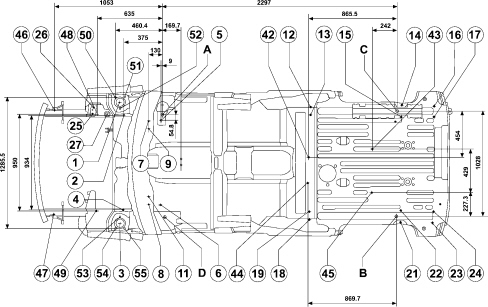
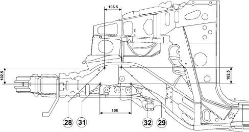
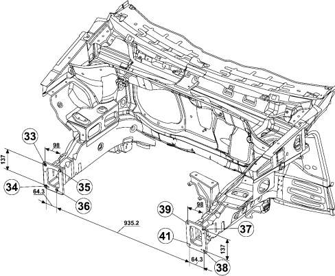

DIAGRAM FOR CHECKING UNDERBODY
- Path
- Descriptions > 72 PANELS AND FRAMES > DIAGRAM FOR CHECKING UNDERBODY
- Kind
- system description
- Applies to
- engines: 1.4 8v, 1.6 16v, 1.3 JTD 16V, 1.9 JTD 8V; production: da 12/03; only with equipment: MY 2005
- Interactive page
- https://sloeber94.github.io/elrnDB-fDbl/en/#/223000272
Applies to: engines: 1.4 8v, 1.6 16v, 1.3 JTD 16V, 1.9 JTD 8V; production: da 12/03; only with equipment: MY 2005
DIAGRAM FOR CHECKING UNDERBODY
For versions starting from 10/2005
This chapter shows the specified bodyshell dimensions to ensure the best results are achieved when carrying out repair operations.
Perspective view of short wheelbase version

Partial front side view

Partial front axonometric view

Distances for the short wheelbase version
POINT | FIGURE REFERRING TO MAIN POINT A | FIGURE REFERRING TO MAIN POINT B | |
|---|---|---|---|
A | Right front main point | X -2297.0 | |
Y 984.0 | |||
Z -145.6 | |||
B | Left front main point | X 2297.0 | |
Y -984.0 | |||
Z 145.6 | |||
C | Right front main point | X 2297.0 | X 0.0 |
Y -44.0 | Y 1028.0 | ||
Z 145.6 | Z 0.0 | ||
D | Left front main point | X 0.0 | X -2297.0 |
Y -940.0 | Y 44.0 | ||
Z 0.0 | Z -145.6 | ||
01 | Right front shock absorber upper attachment on dome | X -414.3 | X -2711.3 |
Y 122.3 | Y 1106.3 | ||
Z 607.7 | Z 462.1 | ||
02 | Right front attachment for front suspension beam | X -375.0 | X -2672.0 |
Y -3.0 | Y 981.0 | ||
Z 129.7 | Z -15.9 | ||
03 | Left front shock absorber upper attachment on dome | X -414.3 | X -2711.3 |
Y -1062.3 | Y -78.3 | ||
Z 607.7 | Z 462.1 | ||
04 | Left front attachment for front suspension beam | X -375.0 | X -2672.0 |
Y -937.0 | Y 47.0 | ||
Z 129.7 | Z -15.9 | ||
05 | Right rear attachment for front suspension beam | X -9.0 | X -2306.0 |
Y -54.5 | Y 929.5 | ||
Z 0.0 | Z -145.6 | ||
06 | Left rear attachment for front suspension beam | X -9.0 | X 2306.0 |
Y -885.5 | Y 98.5 | ||
Z 0.0 | Z -145.6 | ||
07 | Front suspension right crossmember outer front attachment | X -130.0 | X -2427.0 |
Y -62.5 | Y 921.5 | ||
Z 11.7 | Z -133.9 | ||
08 | Front suspension crossmember left outer front attachment | X -130.0 | X -2427.0 |
Y -877.5 | Y 106.5 | ||
Z 11.7 | Z -133.9 | ||
09 | Front suspension crossmember right inner front attachment | X 130.0 | X -2427.0 |
Y -138.5 | Y 845.5 | ||
Z 11.7 | Z -133.9 | ||
11 | Front suspension crossmember left inner front attachment | X -130.0 | X -2427.0 |
Y -801.5 | Y 182.5 | ||
Z 11.5 | Z -133.9 | ||
12 | Right spring to rear leaf spring outer front attachment | X 1829.0 | X -848.0 |
Y 82.75 | Y 1066.75 | ||
Z 35.6 | Z -110 | ||
13 | Right spring to rear leaf spring inner front attachment | X 1829.0 | X -848.0 |
Y 5.25 | Y 989.5 | ||
Z 35.6 | Z -110 | ||
14 | Rear suspension shock absorber right outer attachment | X 2723.4 | X 46.4 |
Y 104.0 | Y 1088.0 | ||
Z 188.1 | Z 42.5 | ||
15 | Rear suspension shock absorber right inner attachment | X 2716.9 | X 39.9 |
Y -13.3 | Y 970.7 | ||
Z 176.9 | Z 31.3 | ||
16 | Right spring to rear leaf spring outer rear attachment | X 3040.0 | X 362.6 |
Y 97.0 | Y 1081.0 | ||
Z 155.6 | Z 10.0 | ||
17 | Right spring to rear leaf spring inner rear attachment | X 3040.0 | X 362.6 |
Y -9.0 | Y 975.0 | ||
Z 155.6 | Z 10.0 | ||
18 | Left spring to rear leaf spring outer front attachment | X 1829.0 | X -848.0 |
Y -1022.75 | Y -38.75 | ||
Z 35.6 | Z -110.0 | ||
19 | Left spring to rear leaf spring inner front attachment | X 1829.0 | X -848.0 |
Y 945.25 | Y 38.75 | ||
Z 35.6 | Z -110.0 | ||
21 | Rear suspension shock absorber left outer attachment | X 2723.4 | X 46.4 |
Y -1044.0 | Y -60.0 | ||
Z 188.1 | Z 42.5 | ||
22 | Rear suspension shock absorber left inner attachment | X 2716.9 | X 39.9 |
Y -926.7 | Y 57.3 | ||
Z 176.9 | Z 31.3 | ||
23 | Left spring to rear leaf spring outer rear attachment | X 3039.5 | X 362.5 |
Y -1028.8 | Y -44.8 | ||
Z 155.5 | Z 9.9 | ||
24 | Left spring to rear leaf spring inner rear attachment | X 3039.5 | X 362.5 |
Y -939.2 | Y 44.8 | ||
Z 155.5 | Z 9.9 | ||
25 | MTP suspension block rh inside front attachment | X -679.75 | X -3356.75 |
Y 7.0 | Y 991.0 | ||
Z 489.0 | Z 343.4 | ||
26 | MTP suspension mounting rh outside front attachment | X -663.2 | X -3340.2 |
Y 80.7 | Y 1064.7 | ||
Z 489.0 | Z 343.4 | ||
27 | MTP suspension mounting right rear attachment | X -538.3 | X -3215.3 |
Y 3.4 | Y 987.4 | ||
Z 489.0 | Z 343.4 | ||
28 | MTP suspension mounting left front attachment | X -668.5 | X -3345.5 |
Y -913.5 | Y 70.5 | ||
Z 384.5 | Z 238.9 | ||
29 | MTP suspension mounting left upper rear attachment | X -562.0 | X -3239.0 |
Y -913.5 | Y 70.5 | ||
Z 384.5 | Z 243.9 | ||
31 | MTP suspension left lower front attachment | X -697.0 | X -3374.0 |
Y -913.5 | Y 70.5 | ||
Z 282.0 | Z 136.4 | ||
32 | MTP suspension mounting left lower rear attachment | X -499.0 | X -3076.0 |
Y -913.5 | Y 70.5 | ||
Z 282.0 | Z 136.4 | ||
33 | Crash box beam right outer upper attachment | X -961.0 | X -3638.0 |
Y 64.3 | Y 1048.7 | ||
Z 336.5 | Z 190.9 | ||
34 | Crash box beam RH outer lower attachment | X -961.0 | X -3638.0 |
Y 64.3 | Y 1048.7 | ||
Z 199.5 | Z 53.9 | ||
35 | Crash box beam RH upper inner attachment | X -961.0 | X -3638.0 |
Y 33.7 | Y 950.3 | ||
Z 336.5 | Z 190.9 | ||
36 | Crash box beam RH inner lower attachment | X -961.0 | X -3638.0 |
Y 0.0 | Y 984.0 | ||
Z 199.5 | Z 53.9 | ||
37 | Crash box beam LH upper outer attachment | X -961.0 | X -3638.0 |
Y -999.5 | Y -15.5 | ||
Z 336.5 | Z 190.9 | ||
38 | Crash box beam LH outer lower attachment | X -961.0 | X -3638.0 |
Y -999.5 | Y -15.5 | ||
Z 199.5 | Z 53.9 | ||
39 | Crash box beam LH upper inner attachment | X 961.0 | X -3638.0 |
Y -901.5 | Y 82.5 | ||
Z 336.5 | Z 190.9 | ||
41 | Crash box beam LH inner lower attachment | X -961.0 | X -3638.0 |
Y -935.2 | Y 48.8 | ||
Z 199.5 | Z 53.9 | ||
42 | RH front attachment for fuel tank fastening | X 1811.5 | X -865.5 |
Y -410.0 | Y 574.0 | ||
Z 145.6 | Z 0.0 | ||
43 | RH rear attachment for fuel tank fastening | X 2435.0 | X -242.0 |
Y -327.7 | Y 656.3 | ||
Z 164.1 | Z 18.5 | ||
44 | LH front attachment for fuel tank fastening | X 1811.5 | X -865.5 |
Y -672.9 | Y 311.1 | ||
Z 145.6 | Z 0.0 | ||
45 | LH rear attachment for fuel tank fastening | X 2435.0 | X -242.0 |
Y -756.7 | Y 227.3 | ||
Z 163.1 | Z 17.5 | ||
46 | Radiator crossmember right front fastening | X 1053.0 | X -3712.0 |
Y 42.0 | Y 1026.0 | ||
Z 74.0 | Z -85.6 | ||
47 | Radiator crossmember left front fastening | X -1053.0 | X -3730.0 |
Y -977.0 | Y 7.0 | ||
Z 74.0 | Z -85.6 | ||
48 | Power unit centering (engine side) | X -635.0 | X -3312.0 |
Y 5.0 | Y 989.0 | ||
Z 216.0 | Z 56.4 | ||
49 | Power unit centering (gearbox side) | X -635.0 | X -3312.0 |
Y -945.0 | Y 39.0 | ||
Z 216.0 | Z 56.4 | ||
50 | Shock absorber right front fastening on turret | X -460.5 | X -2216.5 |
Y 173.0 | Y 1157.0 | ||
Z 611.5 | Z 465.9 | ||
51 | Shock absorber right front fastening on turret | X -368.5 | X 3045.5 |
Y 173.0 | Y 1157.0 | ||
Z 606.0 | Z 460.4 | ||
52 | Shock absorber right front fastening on turret | X -414.5 | X -3091.5 |
Y 59.0 | Y 1043.0 | ||
Z 605.5 | Z 459.9 | ||
53 | Shock absorber left front fastening on turret | X -414.5 | X -3091.5 |
Y -999.0 | Y -15.0 | ||
Z 605.5 | Z 459.9 | ||
54 | Shock absorber left front fastening on turret | X -460.5 | X -2216.5 |
Y -1113.0 | Y -129.0 | ||
Z 611.5 | Z 465.9 | ||
55 | Shock absorber left front fastening on turret | X -368.5 | X -3045.5 |
Y -1113.0 | Y -129.0 | ||
Z 606.0 | Z 460.4 | ||
Perspective view (long wheelbase version)
Partial front side view

Partial front axonometric view

Distances for the long wheelbase version
POINT | FIGURE REFERRING TO MAIN POINT A | FIGURE REFERRING TO MAIN POINT B | |
|---|---|---|---|
A | Left front main point | X -2677.0 | |
Y 984.0 | |||
Z -145.6 | |||
B | Right rear main point | X 2677.0 | |
Y -984.0 | |||
Z 145.6 | |||
C | Right rear main point | X 2677.0 | X 0.0 |
Y -44.0 | Y 1028.0 | ||
Z 145.6 | Z 0.0 | ||
D | Left front main point | X 0.0 | X -2677.0 |
Y -940.0 | Y 44.0 | ||
Z 0.0 | Z -145.6 | ||
01 | Right front shock absorber upper attachment on dome | X -414.3 | X -2711.3 |
Y 122.3 | Y 1106.3 | ||
Z 607.7 | Z 462.1 | ||
02 | Right front attachment for front suspension beam | X -375.0 | X -2672.0 |
Y -3.0 | Y 981.0 | ||
Z 129.7 | Z -15.9 | ||
03 | Left front shock absorber upper attachment on dome | X -414.3 | X -2711.3 |
Y -1062.3 | Y -78.3 | ||
Z 607.7 | Z 462.1 | ||
04 | Left front attachment for front suspension beam | X -375.0 | X -2672.0 |
Y -937.0 | Y 47.0 | ||
Z 129.7 | Z -15.9 | ||
05 | Right rear attachment for front suspension beam | X -9.0 | X -2306.0 |
Y -54.5 | Y 929.5 | ||
Z 0.0 | Z -145.6 | ||
06 | Left rear attachment for front suspension beam | X -9.0 | X 2306.0 |
Y -885.5 | Y 98.5 | ||
Z 0.0 | Z -145.6 | ||
07 | Front suspension right crossmember outer front attachment | X -130.0 | X -2427.0 |
Y -62.5 | Y 921.5 | ||
Z 11.7 | Z -133.9 | ||
08 | Front suspension crossmember left outer front attachment | X -130.0 | X -2427.0 |
Y -877.5 | Y 106.5 | ||
Z 11.7 | Z -133.9 | ||
09 | Front suspension crossmember right inner front attachment | X 130.0 | X -2427.0 |
Y -138.5 | Y 845.5 | ||
Z 11.7 | Z -133.9 | ||
11 | Front suspension crossmember left inner front attachment | X -130.0 | X -2427.0 |
Y -801.5 | Y 182.5 | ||
Z 11.5 | Z -133.9 | ||
12 | Right spring to rear leaf spring outer front attachment | X 1449.0 | X -848.0 |
Y 82.75 | Y 1066.75 | ||
Z 35.6 | Z -110 | ||
13 | Right spring to rear leaf spring inner front attachment | X 1449.0 | X -848.0 |
Y 82.75 | Y 1066.75 | ||
Z 35.6 | Z -110 | ||
14 | Rear suspension shock absorber right outer attachment | X 2343.4 | X 46.4 |
Y 104.0 | Y 1088.0 | ||
Z 188.1 | Z 42.5 | ||
15 | Rear suspension shock absorber right inner attachment | X 2336.9 | X 39.9 |
Y -13.3 | Y 970.7 | ||
Z 176.9 | Z 31.3 | ||
16 | Right spring to rear leaf spring outer rear attachment | X 2660.0 | X 362.6 |
Y 97.0 | Y 1081.0 | ||
Z 155.6 | Z 10.0 | ||
17 | Right spring to rear leaf spring inner rear attachment | X 2660.0 | X 362.6 |
Y -9.0 | Y 975.0 | ||
Z 155.6 | Z 10.0 | ||
18 | Left spring to rear leaf spring outer front attachment | X 1449.0 | X -848.0 |
Y -1022.75 | Y -38.75 | ||
Z 35.6 | Z -110.0 | ||
19 | Left spring to rear leaf spring inner front attachment | X 1449.0 | X -848.0 |
Y -945.25 | Y 38.75 | ||
Z 35.6 | Z -110.0 | ||
21 | Rear suspension shock absorber left outer attachment | X 2343.4 | X 46.4 |
Y -1044.0 | Y -60.0 | ||
Z 188.1 | Z 42.5 | ||
22 | Rear suspension shock absorber left inner attachment | X 2336.9 | X 39.9 |
Y -926.7 | Y 57.3 | ||
Z 176.9 | Z 31.3 | ||
23 | Left spring to rear leaf spring outer rear attachment | X 2659.5 | X 362.5 |
Y -1028.8 | Y -44.8 | ||
Z 155.5 | Z 9.9 | ||
24 | Left spring to rear leaf spring inner rear attachment | X 2659.5 | X 362.5 |
Y -939.2 | Y 44.8 | ||
Z 155.5 | Z 9.9 | ||
25 | MTP suspension block rh inside front attachment | X -679.75 | X -2976.75 |
Y 7.0 | Y 991.0 | ||
Z 489.0 | Z 343.4 | ||
26 | MTP suspension mounting rh outside front attachment | X -663.2 | X -2960.2 |
Y 80.7 | Y 1064.7 | ||
Z 489.0 | Z 343.4 | ||
27 | MTP suspension mounting right rear attachment | X -538.3 | X -2835.3 |
Y 3.4 | Y 987.4 | ||
Z 489.0 | Z 343.4 | ||
28 | MTP suspension mounting left front attachment | X -668.5 | X -2965.5 |
Y -913.5 | Y 70.5 | ||
Z 384.5 | Z 238.9 | ||
29 | MTP suspension mounting left upper rear attachment | X -562.0 | X -2859.0 |
Y -913.5 | Y 70.5 | ||
Z 384.5 | Z 243.5 | ||
31 | MTP suspension left lower front attachment | X -697.0 | X -2994.0 |
Y -913.5 | Y 70.5 | ||
Z 282.0 | Z 136.4 | ||
32 | MTP suspension mounting left lower rear attachment | X -499.0 | X -2796.0 |
Y -913.5 | Y 70.5 | ||
Z 282.0 | Z 136.4 | ||
33 | Crash box beam right outer upper attachment | X -961.0 | X -3258.0 |
Y 64.3 | Y 1048.5 | ||
Z 336.5 | Z 190.9 | ||
34 | Crash box beam RH outer lower attachment | X -961.0 | X -358.0 |
Y 64.3 | Y 1048.7 | ||
Z 199.5 | Z 53.9 | ||
35 | Crash box beam RH upper inner attachment | X -961.0 | X -3258.0 |
Y -33.7 | Y 950.3 | ||
Z 336.5 | Z 190.9 | ||
36 | Crash box beam RH inner lower attachment | X -961.0 | X -3258.0 |
Y 0.0 | Y 984.0 | ||
Z 199.5 | Z 53.9 | ||
37 | Crash box beam LH upper outer attachment | X -961.0 | X -3258.0 |
Y -999.5 | Y -15.5 | ||
Z 336.5 | Z 190.9 | ||
38 | Crash box beam LH outer lower attachment | X -961.0 | X 3258.0 |
Y -999.5 | Y -15.5 | ||
Z 199.5 | Z 53.9 | ||
39 | Crash box beam LH upper inner attachment | X -961.0 | X -3258.0 |
Y -901.5 | Y 82.5 | ||
Z 336.5 | Z 190.9 | ||
41 | Crash box beam LH inner lower attachment | X -961.0 | X -3258.0 |
Y -935.2 | Y 48.8 | ||
Z 199.5 | Z 53.9 | ||
42 | RH front attachment for fuel tank fastening | X 1431.5 | X -865.5 |
Y -410.0 | Y 574.0 | ||
Z 145.6 | Z 0.0 | ||
43 | RH rear attachment for fuel tank fastening | X 2055.0 | X -242.0 |
Y -327.7 | Y 656.3 | ||
Z 164.1 | Z 18.5 | ||
44 | LH front attachment for fuel tank fastening | X 1431.5 | X -865.5 |
Y -672.9 | Y 311.1 | ||
Z 145.6 | Z 0.0 | ||
45 | LH rear attachment for fuel tank fastening | X 2055.0 | X -242.0 |
Y -756.7 | Y 227.3 | ||
Z 163.1 | Z 17.5 | ||
46 | Radiator crossmember right front fastening | X -1053.0 | X -3332.0 |
Y 42.0 | Y 1026.0 | ||
Z 74.0 | Z -85.6 | ||
47 | Radiator crossmember left front fastening | X -1053.0 | X -3350.0 |
Y -977.0 | Y 7.0 | ||
Z 74.0 | Z -85.6 | ||
48 | Power unit centering (engine side) | X -635.0 | X -2932.0 |
Y 5.0 | Y 989.0 | ||
Z 216.0 | Z 56.4 | ||
49 | Power unit centering (gearbox side) | X -635.0 | X -2932.0 |
Y -945.0 | Y 39.0 | ||
Z 216.0 | Z56,4 | ||
50 | Shock absorber right front fastening on turret | X -460.5 | X -1836.5 |
Y 173.0 | Y 1157.0 | ||
Z 611.5 | Z 465.9 | ||
51 | Shock absorber right front fastening on turret | X -368.5 | X -2665.5 |
Y 173.0 | Y 1157.0 | ||
Z 606.0 | Z 460.4 | ||
52 | Shock absorber right front fastening on turret | X -414.5 | X -2711.5 |
Y 59.0 | Y 1043.0 | ||
Z 605.5 | Z 459.9 | ||
53 | Shock absorber left front fastening on turret | X -414.5 | X -2711.5 |
Y -999.0 | Y -15.0 | ||
Z 605.5 | Z 459.9 | ||
54 | Shock absorber left front fastening on turret | X -460.5 | X -1836.5 |
Y -1113.0 | Y -129.0 | ||
Z 611.5 | Z 465.9 | ||
55 | Shock absorber left front fastening on turret | X -368.5 | X -3045.5 |
Y -1113.0 | Y -129.0 | ||
Z 606.0 | Z 460.4 | ||